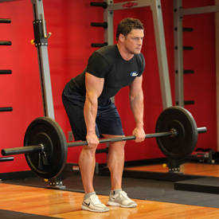
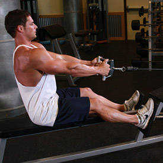
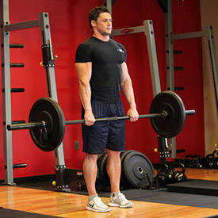
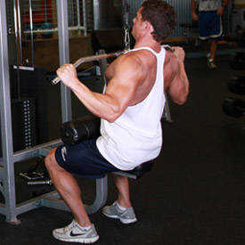

If you're someone who only like to work out your "show muscles" (chest, arms, abs and some shoulders) then move on, but if you are looking to have a thick, dense and well-balanced upper body then stick around. Today we are going to discuss how to turn your baby back into wide thick wings of muscle.
In most cases the back is an afterthought for many beginners. The back can't be seen when you look in the mirror, and most people have a hard time contracting the back when they first start working out, so the majority of beginners do a few half-hearted sets of pull-downs and low cable rows and move on to something else.
In this article I will discuss the anatomy of the back, its function, location in the body, and some exercises for each area of the back. Finally I will include five of my favorite workout programs to help turn your tiny back into massive slabs of muscle.
- Bent Over Barbell Row
- Holding a barbell with a pronated grip (palms facing down), bend your knees slightly and bring your torso forward, by bending at the waist, while keeping the back straight until it is almost parallel to the floor. Tip: Make sure that you keep the head up. The barbell should hang directly in front of you as your arms hang perpendicular to the floor and your torso. This is your starting position.
- Now, while keeping the torso stationary, breathe out and lift the barbell to you. Keep the elbows close to the body and only use the forearms to hold the weight. At the top contracted position, squeeze the back muscles and hold for a brief pause.
- Then inhale and slowly lower the barbell back to the starting position.
- Repeat for the recommended amount of repetitions.

Caution:
This exercise is not recommended for people with back problems. A Low Pulley Row is a better choice for people with back issues.
Also, just like with the bent knee dead-lift, if you have a healthy back, ensure perfect form and never slouch the back forward as this can cause back injury.
Be cautious as well with the weight used; in case of doubt, use less weight rather than more.
Variations:
You can perform the same exercise using a supinated (palms facing you) grip.
- Seated Cable Rows
- For this exercise you will need access to a low pulley row machine with a V-bar. Note: The V-bar will enable you to have a neutral grip where the palms of your hands face each other. To get into the starting position, first sit down on the machine and place your feet on the front platform or crossbar provided making sure that your knees are slightly bent and not locked.
- Lean over as you keep the natural alignment of your back and grab the V-bar handles.
- With your arms extended pull back until your torso is at a 90-degree angle from your legs. Your back should be slightly arched and your chest should be sticking out. You should be feeling a nice stretch on your lats as you hold the bar in front of you. This is the starting position of the exercise.
- Keeping the torso stationary, pull the handles back towards your torso while keeping the arms close to it until you touch the abdominals. Breathe out as you perform that movement. At that point you should be squeezing your back muscles hard. Hold that contraction for a second and slowly go back to the original position while breathing in.
- Repeat for the recommended amount of repetitions.

Caution:
Avoid swinging your torso back and forth as you can cause lower back injury by doing so.
Variations
You can use a straight bar instead of a V-Bar and perform with a pronated grip (palms facing down-forward) or a supinated grip (palms facing up-reverse grip).
- Stiff-Legged Barbell Deadlift
- Grasp a bar using an overhand grip (palms facing down). You may need some wrist wraps if using a significant amount of weight.
- Stand with your torso straight and your legs spaced using a shoulder width or narrower stance. The knees should be slightly bent. This is your starting position.
- Keeping the knees stationary, lower the barbell to over the top of your feet by bending at the waist while keeping your back straight. Keep moving forward as if you were going to pick something from the floor until you feel a stretch on the hamstrings. Inhale as you perform this movement.
- Start bringing your torso up straight again by extending your hips until you are back at the starting position. Exhale as you perform this movement.
- Repeat for the recommended amount of repetitions.

Caution:
This is not an exercise that is recommended for people with lower back problems. Also, it needs to be treated with the utmost respect paying special attention not to round the back forward as you move the torso down; the back should always be straight. Finally, jerking motions or doing too much weight can injure your back.
Variations
The exercise can also be performed with a dumbbell as described above.
- Wide-Grip Lat Pulldown
- Sit down on a pull-down machine with a wide bar attached to the top pulley. Make sure that you adjust the knee pad of the machine to fit your height. These pads will prevent your body from being raised by the resistance attached to the bar.
- Grab the bar with the palms facing forward using the prescribed grip. Note on grips: For a wide grip, your hands need to be spaced out at a distance wider than shoulder width. For a medium grip, your hands need to be spaced out at a distance equal to your shoulder width and for a close grip at a distance smaller than your shoulder width.
- As you have both arms extended in front of you holding the bar at the chosen grip width, bring your torso back around 30 degrees or so while creating a curvature on your lower back and sticking your chest out. This is your starting position.
- As you breathe out, bring the bar down until it touches your upper chest by drawing the shoulders and the upper arms down and back. Tip: Concentrate on squeezing the back muscles once you reach the full contracted position. The upper torso should remain stationary and only the arms should move. The forearms should do no other work except for holding the bar; therefore do not try to pull down the bar using the forearms.
- After a second at the contracted position squeezing your shoulder blades together, slowly raise the bar back to the starting position when your arms are fully extended and the lats are fully stretched. Inhale during this portion of the movement.
- Repeat this motion for the prescribed amount of repetitions.

Variations:
The behind the neck variation is not recommended as it can be hard on the rotator cuff due to the hyperextension created by bringing the bar behind the neck.
- Underhand Cable Pulldown
- Sit down on a pull-down machine with a wide bar attached to the top pulley. Adjust the knee pad of the machine to fit your height. These pads will prevent your body from being raised by the resistance attached to the bar.
- Grab the pull-down bar with the palms facing your torso (a supinated grip). Make sure that the hands are placed closer than the shoulder width.
- As you have both arms extended in front of you holding the bar at the chosen grip width, bring your torso back around 30 degrees or so while creating a curvature on your lower back and sticking your chest out. This is your starting position.
- As you breathe out, pull the bar down until it touches your upper chest by drawing the shoulders and the upper arms down and back. Tip: Concentrate on squeezing the back muscles once you reach the fully contracted position and keep the elbows close to your body. The upper torso should remain stationary as your bring the bar to you and only the arms should move. The forearms should do no other work other than hold the bar.
- After a second on the contracted position, while breathing in, slowly bring the bar back to the starting position when your arms are fully extended and the lats are fully stretched.
- Repeat this motion for the prescribed amount of repetitions.
- One-Arm Dumbbell Row
- Choose a flat bench and place a dumbbell on each side of it.
- Place the right leg on top of the end of the bench, bend your torso forward from the waist until your upper body is parallel to the floor, and place your right hand on the other end of the bench for support.
- Use the left hand to pick up the dumbbell on the floor and hold the weight while keeping your lower back straight. The palm of the hand should be facing your torso. This will be your starting position.
- Pull the resistance straight up to the side of your chest, keeping your upper arm close to your side and keeping the torso stationary. Breathe out as you perform this step. Tip: Concentrate on squeezing the back muscles once you reach the full contracted position. Also, make sure that the force is performed with the back muscles and not the arms. Finally, the upper torso should remain stationary and only the arms should move. The forearms should do no other work except for holding the dumbbell; therefore do not try to pull the dumbbell up using the forearms.
- Lower the resistance straight down to the starting position. Breathe in as you perform this step
- Repeat the movement for the specified amount of repetitions.
- Switch sides and repeat again with the other arm.
Variations:
One-arm rows can also be performed using a high pulley or a low pulley instead of a dumbbell.
- Hyperextensions(Back Extension)
- Lie face down on a hyperextension bench, tucking your ankles securely under the footpads.
- Adjust the upper pad if possible so your upper thighs lie flat across the wide pad, leaving enough room for you to bend at the waist without any restriction.
- With your body straight, cross your arms in front of you (my preference) or behind your head. This will be your starting position. Tip: You can also hold a weight plate for extra resistance in front of you under your crossed arms.
- Start bending forward slowly at the waist as far as you can while keeping your back flat. Inhale as you perform this movement. Keep moving forward until you feel a nice stretch on the hamstrings and you can no longer keep going without a rounding of the back. Tip: Never round the back as you perform this exercise. Also, some people can go farther than others. The key thing is that you go as far as your body allows you to without rounding the back.
- Slowly raise your torso back to the initial position as you inhale. Tip: Avoid the temptation to arch your back past a straight line. Also, do not swing the torso at any time in order to protect the back from injury.
- Repeat for the recommended amount of repetitions.
Variations:
This exercise can also be performed without a hyperextension bench, but in this case you will need a spotter. Also, a similar exercise to this one is the good morning and the stiff-legged deadlift.